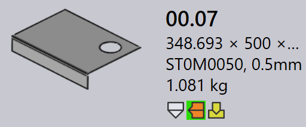

ツーリングステータス
JFY Plus では、各部品タイルは、利用可能なすべてのマシンに対するその部品のツーリングステータスを視覚的に示します。これにより、ユーザーは部品がどのマシン用にツーリングされているか、そしてツーリングが準備できているか、確認が必要か、または不足しているかをすばやく確認できます。
-
ツーリングステータスは、アイコンと色インジケーターを使用して部品タイルに直接表示されます。
-
各アイコンはマシンのテクノロジー（例: Bend、Laser）を表します。
-
アイコンの色は、そのマシンの現在のツーリングステータスを示します。
以下の表は、各アイコンと色の意味を説明し、ユーザーがツーリングステータスを正確に解釈できるようにします。

ツーリングエラー
CAM（Computer-Aided Manufacturing）エラーは、ツーリングまたは製造準備の段階で発生します。これらのエラーは、工具の衝突、ツーリングの欠落、無効な切断条件などの問題により発生します。
以下の画像は、ツーリング中に部品タイルに表示される可能性のあるツーリングエラー状態の例を示しています。以下のセクションでは、各ツーリングエラーとその原因を説明します。

曲げツーリングエラー
-
Collisions detected および Gripper error : 曲げのセットアップが、シミュレーション中に工具またはグリッパーの衝突を引き起こします。
-
Tool Overload および Narrow flange or hole too close : 曲げ工具が過負荷になっているか、穴が曲げ線に近すぎる場所にあり、部品または工具を損傷する可能性があります。
-
Needs review および Short Punch/Die span : ツーリングのセットアップに手動検査が必要か、選択した die/punch のスパンが部品に必要なものより小さいです。
-
Tool Missing、Poor backguage、または Part too big for this machine : 必要な曲げ工具が利用できないか、backgauge が正しく構成されていないか、部品が選択したマシンに対して大きすぎます。
切断ツーリングエラー
-
Missing cutting condition : 切断条件が素材にマッピングされていないため、切断を実行できません。
-
Untooled or partially tooled contours : ツーリングプロセス中に一部の形状またはエッジが見逃されるか部分的にしかカバーされず、部品が切断のために不完全になります。